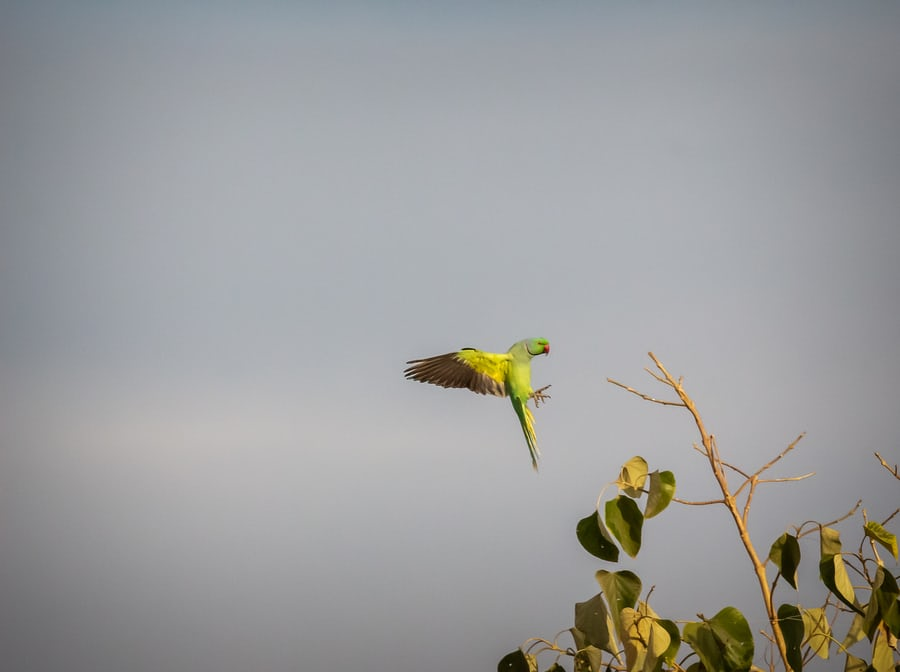
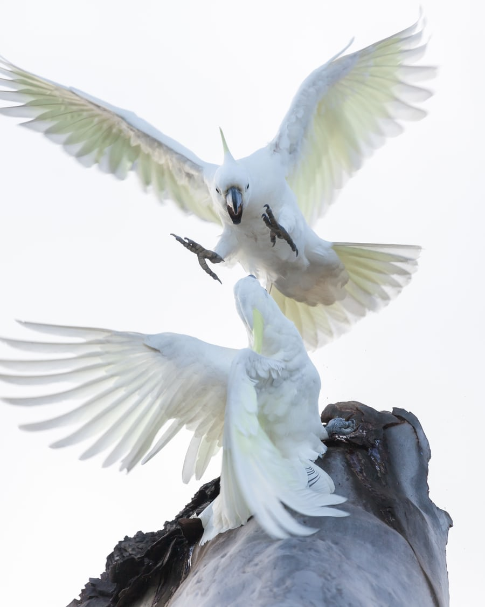

Birds In Flight
Lets talk about flight now. First, did you know flying and gliding through the air is not the same thing? Flight takes so much energy bodily changes so if the bird does not fly it will lose its flight adaptations. They fly to escape predotors, finding nesting sights and searching for food. They also locate to new habitats and to a better seasonal climate if they need too.
But what is required to take flight? Flight requires a complex set of feathers. Primary and secondary. The primary feathers are the outer wing feathers. These primary feathers are moved forward and backwards in a figure eight pattern and acts as a propeller to produce thrust. It is the secondary feathers that produce lift as the bird's body is pulled through the air. These are the inner feathers of the wing. Birds with smaller wings have to fly faster while birds with larger wings need more lift to get their bodies off the ground. Lastly the difference between gliding and flying. Glidding is when a bird holds its wings out for long periods of time. This also helps with fatigue. They also have an interesting tendon that assures that a bird's feathers are spread at a proper distance to maintain at all times. How cool is that?
 